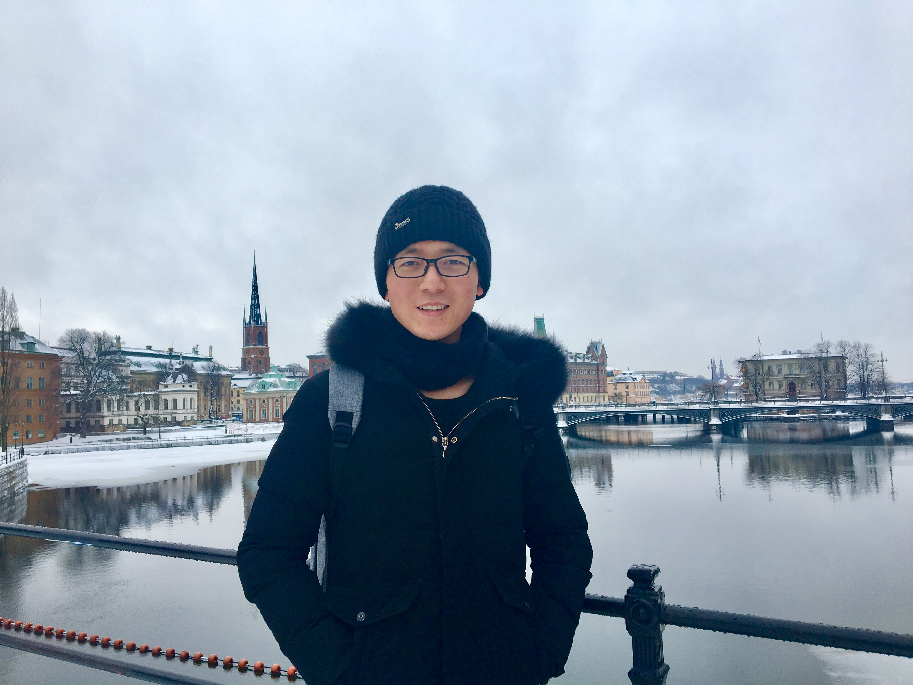

|  | Bingbing Feng (冯 兵兵) |
About Me
I am currently an Algorithm Researcher in the Speech Research Group at eMeet. Prior to joining eMeet, I obtained my B.Sc. degree and M.Sc. degree both in computer science from the College of Information Engineering, Xiangtan University, China in 2015 and 2018, respectively. I am mostly working on speech recognition and speech augmentation problems, and have broad interests in nonlinear dynamics, complex network and natural language processing as well. I have published 3 technical papers in refereed journals such as IEEE TCAS-I and IEEE TC, and at the same time, I am the winner of 2022 IEEE Transactions on Circuits and Systems Guillemin-Cauer Best Paper.Work Experience
- 2019.11-Present Speech Recognition Algorithm Researcher, eMeet Worked on end-to-end ASR (Automatic Speech Recognition), improving AED (Attention-based Encoder-Decoder) model with chunk-wise self-attention and speech enhancement for robust streaming ASR, developing important production-oriented features ranging from ITN (Inverse Text Normalization), Punctuation Restoration, Contextual Biasing and Endpoint Detection.
- 2018.07-2019.07 Algorithm Researcher, Silver Star Worked on VSLAM (Visual Simultaneous Localization and Mapping) for floor mopping robot.
Research Interests
My research interests include speech recognition, speech augmentation, nonlinear dynamics, complex network and natural language processing. Currently, I focus on the following research topics:- Light-Weighted Far-field Robust Speech Recognition
- Single-Channel Speech Enhancement
Education
-
2015.09-2018.06 M.Sc. from School of Computer Science, Xiangtan University
Supervisor: Prof. Chengqing Li
Master's Thesis: Network Analysis of Dynamics of Chaotic Systems in Digital Domain - 2011.09-2015.06 B.Sc. from School of Computer Science, Xiangtan University
Publications
- Chengqing Li (supervisor), Bingbing Feng, Shujun Li, Jürgen Kurths, Guanrong Chen,
“Dynamic Analysis of Digital Chaotic Maps via State-Mapping Networks,”
IEEE Transactions on Circuits and Systems I: Regular Papers, vol. 66, no. 5, pp. 1–14, 2019 [PDF]
2022 IEEE Transactions on Circuits and Systems Guillemin-Cauer Best Paper - Chengqing Li (supervisor), Kai Tan, Bingbing Feng, Jinhu Lü,
“The graph structure of the generalized discrete Arnold Cat map,”
IEEE Transactions on Computers, vol. 71, no. 2, pp. 364-377, 2022 [PDF]
ESI Highly Cited Paper - Chengqing Li (supervisor), Dongdong Lin, Bingbing Feng, Jinhu Lü, Feng Hao,
“Cryptanalysis of a Chaotic Image Encryption Algorithm Based on Information Entropy,”
IEEE Access, vol. 6, pp. 75834–75842, 2018 [PDF]
Patents
- Lirong Ye, Bingbing Feng, Danping Luo,
“Door Area Identification Method, Door Area Identification System and Cleaning Robot for Home Environment,”
CN Patent 110,141,164 (2021) [PDF] - Danping Luo, Bingbing Feng,
“Door Position Identification Method and Mobile Robot,”
CN Patent 110,269,550 (2021) [PDF]
Honors and Awards
Professional Services
Refereed Journals:
- IEEE Transactions on Circuits and Systems I: Regular Papers
- International Journal of Bifurcation and Chaos, World Scientific